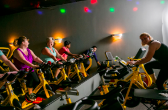

| Hours: | ||
| Monday - Friday | 5:00am - 12:00am | |
| Saturday - Sunday | 5:00am - 11:00pm | |
The Retro Blends Smoothie Bar is available at Retro Fitness locations only to provide the gym-goer with great tasting, good for you, fresh blended protein smoothies.
Researchers found that people who practiced yoga for at least 30 minutes once a week for at least four years, gained less weight during middle adulthood. People who were overweight actually lost weight. Overall, those who practiced yoga had lower body mass indexes compared with those who did not practice yoga.

It's fun. The more you enjoy your exercise routine, the more likely you are to stick with it. Dancing, like any cardio workout, gets your heart rate up, which helps you maintain a healthy cardiovascular, respiratory system. It’s also great for building endurance since most of the songs played during class are around 145 beats per minute.

Cycling habitually, especially at a high intensity, helps lower body fat levels, which promotes healthy weight management.
Saunas appear safe for patients with stable coronary artery disease. A small study from Japan suggested that two weeks of daily saunas may even improve vascular function in patients with mildly damaged hearts that cannot pump blood normally.